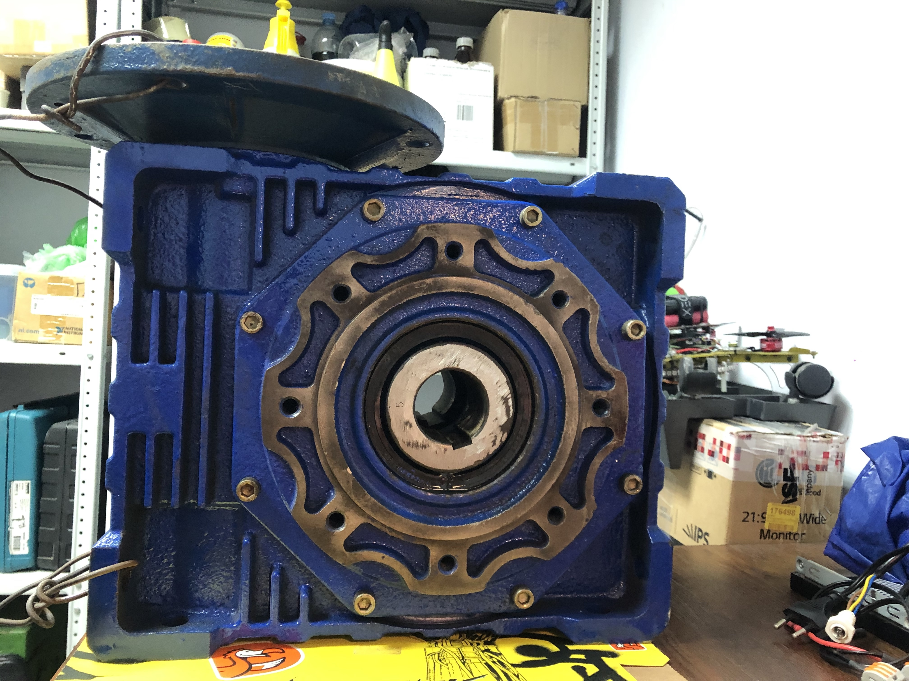
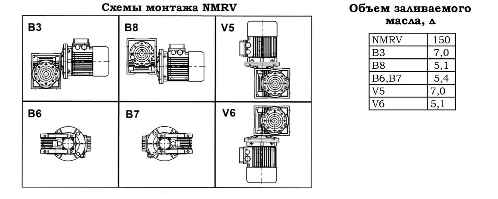
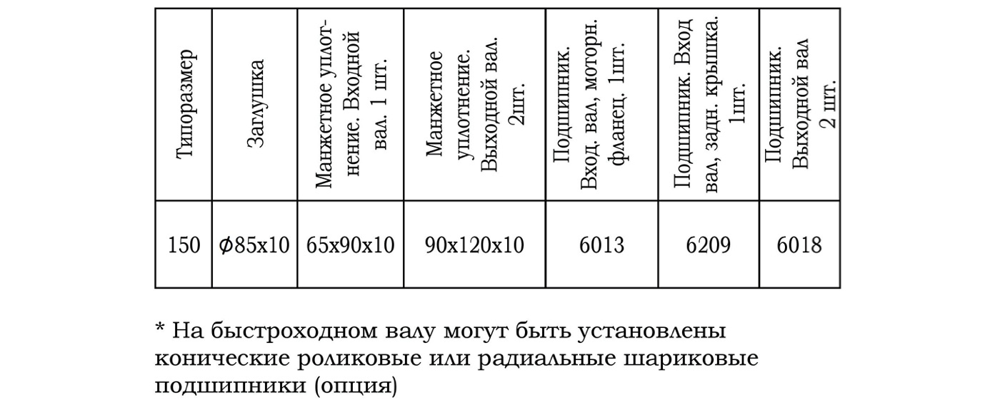
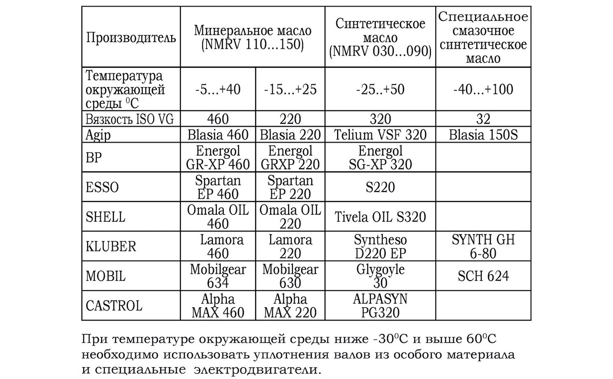
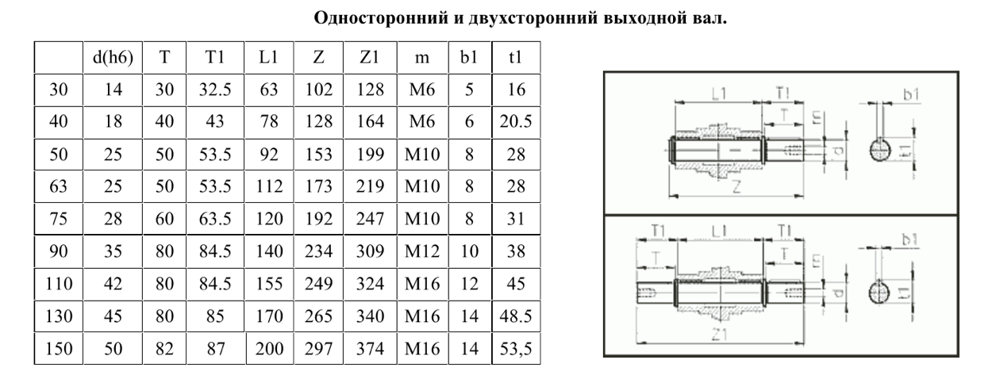
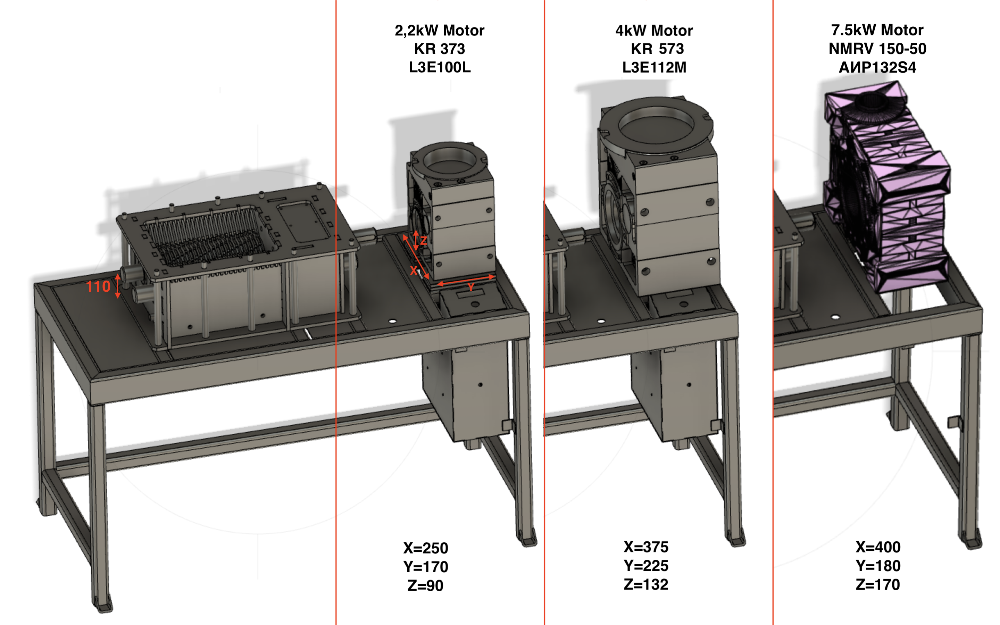
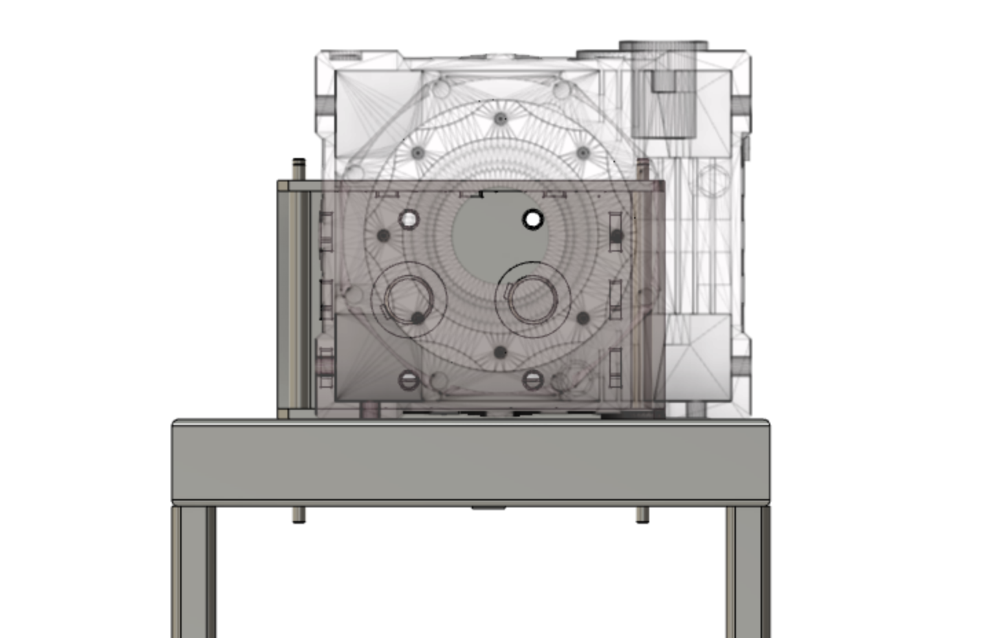
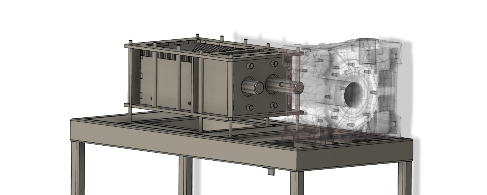

Programming, robotics, traveling
Навигация по проекту:
Первым делом после покупки, я снял стреч плёнку в которую был упакован редуктор и обнаружил подтёки масла. После осмотра редуктора оказалось, что масло вытекает с одной из сторон выходной оси, а также из под пробки с окошком.

После чего я нашел следующие две инструкции по эксплуатации: #1 и #2.
Как оказалось, объём заливаемого масла зависит от схемы монтажа редуктора.

У меня используется схема монтажа V5, которая вмещает максимальный объём масла. Поэтому подтёки масла возникли не в случае его избытка, а из-за амортизации уплотнительных манжет. Их можно заменить согласно следующей таблице:

Также в инструкциях указаны марки подходящего масла:

В дополнение, я нашел информацию о стандартизированном вале для редуктора:

Здесь есть больше информации про выходной вал.
Следующим этапом планирую слить масло с редуктора, произвести визуальный осмотр внутренних частей, заказать необходимые расходники в случае необходимости.
Первое что нужно проверить – высоту осей механизма шреддера и редуктора.

2.2kW мотор-редуктор, который использовали в Precious Plastic, имеет высоту оси 90. Требуемую высоту в 110мм достигли путем добавления двух пластин-подкладок по 10мм.
При использовании мотор-редуктора NMRV150, высота оси составляет 170мм, ввиду чего необходимо предусмотреть крепление редуктора ниже плоскости стола на 60мм, либо поднять механизм шреддера на эту же высоту.
Интересно, что редуктор
KR 573прилагаемый в 3D моделях, также невозможно закрепить без поднятия механизма шреддера или изменения рамы стола.
Также ось редуктора смещена к центру стола, ввиду чего необходимо также произвести смещение относительно этой оси.

Ввиду того, что увеличение механизма шреддера слишком трудозатратно, впоследствии будет мотор-редуктор будет закреплен ниже или под механизмом шреддера буду добавлены проставки.
